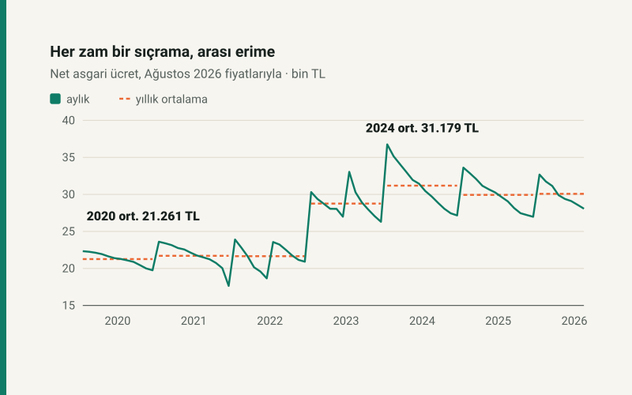

Kısa cevap
Yıllık ortalamaya bakınca yendi: Ağustos 2026 fiyatlarıyla net asgari ücretin yıllık ortalaması 2020'de 21.261 TL, 2024'te 31.179 TL. 2025'te 29.936 TL'ye geriledi, 2026'nın ilk sekiz ayında 30.078 TL.
Zamlar arasındaki süreye bakınca her seferinde yenildi: net asgari ücret zamdan hemen sonraki ay ile bir sonraki zamdan önceki son ay arasında %11,0 ile %26,1 arasında alım gücü kaybetti. En sert erime, yılda tek zam yapılan 2024'te.
Nasıl ölçüldü?
Her ayın resmî net asgari ücreti, o aydan Ağustos 2026'ya kadarki TÜFE çarpanıyla çarpıldı. Böylece bütün tutarlar aynı fiyatlarla, yani Ağustos 2026 lirasıyla ifade ediliyor. 2020 ve 2021 tutarları asgari geçim indirimi dahil nettir; 2022'den itibaren asgari ücret gelir ve damga vergisinden istisna olduğu için net, brütten yalnızca sigorta primleri düşülmüş tutardır.
Zamdan zamma: testere dişi
| Dönem | Nominal net | İlk ay, reel | Son ay, reel | Dönem içi erime |
|---|---|---|---|---|
| Oca–Ara 2020 | 2.324,71 TL | 22.326 TL | 19.749 TL | −%11,5 |
| Oca–Ara 2021 | 2.825,90 TL | 23.610 TL | 17.642 TL | −%25,3 |
| Oca–Haz 2022 | 4.253,40 TL | 23.901 TL | 18.655 TL | −%21,9 |
| Tem–Ara 2022 | 5.500,35 TL | 23.565 TL | 20.906 TL | −%11,3 |
| Oca–Haz 2023 | 8.506,80 TL | 30.317 TL | 26.993 TL | −%11,0 |
| Tem–Ara 2023 | 11.402,32 TL | 33.045 TL | 26.300 TL | −%20,4 |
| Oca–Ara 2024 | 17.002,12 TL | 36.754 TL | 27.163 TL | −%26,1 |
| Oca–Ara 2025 | 22.104,67 TL | 33.624 TL | 26.979 TL | −%19,8 |
| Oca–Ağu 2026 | 28.075,50 TL | 32.685 TL | 28.076 TL | −%14,1 |
Tablo iki şeyi birlikte gösteriyor. Zamlar net asgari ücreti her seferinde öncekinin üzerine çıkardı: dönem başındaki reel değer 2020'de 22.326 TL iken 2024'te 36.754 TL'ydi. Ama dönem içindeki erime de büyüdü. Yılda iki zam yapılan dönemlerde (2022, 2023) erime altı ayda %11 ile %22 arasında kaldı; tek zamlı 2021 ve 2024'te on iki ayda %25'i aştı.
Yıllık ortalama
| Yıl | Ortalama reel net | 2020'ye göre |
|---|---|---|
| 2020 | 21.261 TL | — |
| 2021 | 21.710 TL | +%2,1 |
| 2022 | 21.656 TL | +%1,9 |
| 2023 | 28.761 TL | +%35,3 |
| 2024 | 31.179 TL | +%46,6 |
| 2025 | 29.936 TL | +%40,8 |
| 2026 | 30.078 TL | +%41,5 |
İlk üç yıl yerinde saydı; asıl sıçrama 2023'te geldi. 2024 dönemin zirvesi. Ortalama, bir ailenin yıl boyunca yaşadığı alım gücünü özetler; manşetteki "zam oranı" ise yalnızca ocak ayını anlatır.
Asgari ücretin üstü: sıkışma 2022'de oldu
Asgari ücretin iki, üç ya da beş katı brüt alan birinin neti asgari net ücretin kaç katı? Ocak aylarında ölçüldü:
| Brüt | 2020–2021 | 2022–2026 |
|---|---|---|
| 2 kat | 1,905 | 1,841 |
| 3 kat | 2,810 | 2,682 |
| 5 kat | 4,620 | 4,364 |
Oranlar iki rejim içinde yıldan yıla değişmiyor; değişim yalnızca 2022'deki rejim geçişinde. Asgari geçim indirimi kalkıp yerine asgari ücret istisnası gelince asgari ücretlinin neti brütüne yaklaştı; üst ücretlerin neti de istisnadan yararlandı ama aynı oranda değil. Sonuç: asgari ücretin üç katını kazanan biri 2022'den beri net olarak asgari ücretin 2,81 değil 2,68 katını alıyor.
Kendi maaşınız
Aynı hesabı kendi maaşınızla yapmak için reel maaş hesaplama aracına iki tarihteki netinizi ya da brütünüzü girin; araç alım gücü değişimini, enflasyona göre olması gereken maaşı ve asgari ücrete göre kaç kat olduğunuzu gösterir. İki tarih arası enflasyonun kendisi için enflasyon hesaplama.
Kaynaklar
- Asgari Ücret Tespit Komisyonu kararları, 2020–2026 (Resmî Gazete); net tutarlar sitenin bordro motoru parametrelerinden.
- TÜİK Tüketici Fiyat Endeksi, aylık % değişim (TCMB Tüketici Fiyatları tablosu).
- 193 sayılı Gelir Vergisi Kanunu m.23/1-(18) (asgari ücret istisnası, 2022'den itibaren).
Bütün tablolar motordan ve TÜFE modülünden yeniden hesaplanıp otomatik testle doğrulanır; Ağustos 2026'ya çivilidir.
Sık sorulan sorular
Asgari ücret enflasyonu yendi mi?
Yıllık ortalamada evet: Ağustos 2026 fiyatlarıyla 2020'de 21.261 TL olan ortalama reel net, 2024'te 31.179 TL oldu. Ama her zam döneminin içinde alım gücü %11 ile %26 arasında eridi.
Asgari ücret en çok hangi yıl eridi?
2024'te. Yılda tek zam yapılan 2024'te net asgari ücret ocaktan aralığa alım gücünün %26,1'ini kaybetti.
Yılda iki zam neden fark ediyor?
Erime zamla zam arasındaki süreye bağlı. İki zamlı 2022 ve 2023'te altı aylık dönemlerde kayıp %11 ile %22 arasında kaldı; tek zamlı yıllarda on iki ayda %25'i aştı.
Asgari ücretin üç katını alan birinin neti neden 2,68 kat?
2022'de asgari geçim indirimi yerine asgari ücret istisnası geldi. Asgari ücretlinin neti brütüne yaklaştı; üst ücretlerde istisna aynı oranda etki etmedi. Oran 2022'den beri sabit.